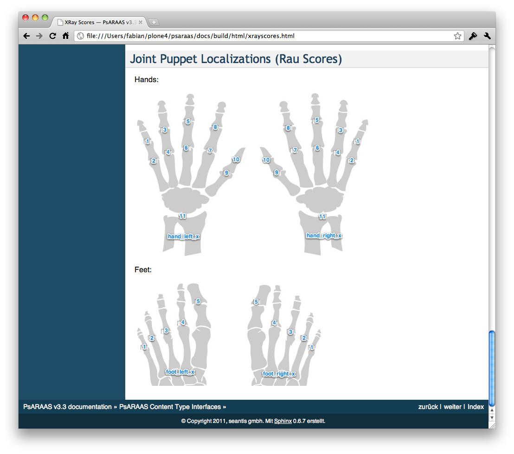

Blog
Data Dictionary mit Sphinx

Die SCQM-Rheumadatenbank umfasst hunderte von Fragen und damit Datenbankfelder. Um den Überblick über alle Felder sowie deren Bezeichnungen, Werte und Enumerationen zu behalten, erstellen wir die Dokumentation aller Felder mit Sphinx.
Sphinx gereneriert den Data Dictionary automatisch aus den Interfaces im Code. So stellen wir sicher, dass die Dokumentation auch bei Weiterentwicklungen stets up-to-date bleibt.

Die Dokumentation wird bei jedem Release online veröffentlich, so dass Forschende einfach Zugriff auf diese Informationen haben: http://docs.scqm.ch
Connecting to MSSQL with pyodbc
First, you need to install some packages.
$ sudo aptitude install unixodbc unixodbc-dev freetds-dev sqsh tdsodbc
With FreeTDS installed configure it like this:
/etc/freetds/freetds.conf
[myServer]
# host configuration is in /etc/odbcinst.ini
tds version = 7.0
Testing FreeTDS is not too hard:
$ sqsh -S myServer -U USERNAME -P PASSWORD
Next up it’s necessary to configure ODBC:
/etc/odbcinst.ini
[FreeTDS]
Description = TDS driver (Sybase/MS SQL)
Driver = /usr/lib/odbc/libtdsodbc.so
Setup = /usr/lib/odbc/libtdsS.so
CPTimeout =
CPReuse =
FileUsage = 1
/etc/odbc.ini
[myServer]
Driver = FreeTDS
Description = ODBC connection via FreeTDS
Trace = No
Servername = myServer
Database = DATABASENAME
Now you want to install pyodbc
$ easy_install pyodbc
and use it in python:
import pyodbc
cnxn = pyodbc.connect('DSN=myServer;UID=USERNAME;PWD=PASSWORD')
See: http://lambie.org/2008/02/28/connecting-to-an-mssql-database-from-ruby- on-ubuntu/
Suchen um zu lesen - Chancen digitaler Texte
Grafik: Book vs Internet 1800 - 2000 im Books Ngram Viewer: Gab es um 1900 schon mal ein Internet? :-)
Hintergrund der Artikel in der NZZ bildet ein Paper in Science, in welchem gezeigt wird, wie die gewaltige Datenmenge der von Google digitalisierten Bücher mit quantitativen Methoden für die Forschung nutzbar gemacht werden kann.
 Vor gut zwei Wochen berichtete bereits der Economist über das Paper. So konnte man lesen, mit welchen Problemen sich die Wissenschaftler bei der statistischen Analyse von Texten herumzuschlagen haben (Schreibfehler, Daten, Akronymen). Auch ein paar interessante Erkenntnisse bezüglich des Umfangs des Wortschatzes und dessen Abdeckung in Wörterbüchern wurden erwähnt.
Vor gut zwei Wochen berichtete bereits der Economist über das Paper. So konnte man lesen, mit welchen Problemen sich die Wissenschaftler bei der statistischen Analyse von Texten herumzuschlagen haben (Schreibfehler, Daten, Akronymen). Auch ein paar interessante Erkenntnisse bezüglich des Umfangs des Wortschatzes und dessen Abdeckung in Wörterbüchern wurden erwähnt.
In der NZZ findet sich im Teil "Forschung und Technik" ein Artikel, welcher auf die interessanten Aspekte des wissenschaftlichen Aufsatzes eingeht, in "Meinung & Debatten" und dem Feuilleton finden sich erstaunlich kulturpessimistische und ablehnende Artikel. Im Grundtenor wird kritisiert, dass Texte so nicht mehr gelesen sondern nur noch benutzt würden (suchen statt lesen).
"Das genaue und emphatische Lesen (man kann es auch zweckfreies Lesen nennen) dürfte in den letzten Jahren etwas aus der Mode gekommen sein. Auf dem Vormarsch dagegen befinden sich die Benutzer der Texte."
Wer so argumentiert, der nimmt die wichtigste Motivation ein Buch zu lesen nicht ernst: das Lesevergnügen. Natürlich ist die Volltextsuche nichts anderes als ein Werkzeug um Inhalte zu kategorisieren. Solche Kategorisierungen gab es in Bibliotheken schon immer; keiner wäre jedoch auf die Idee gekommen, das Suchen im Register dem Lesen eines Buches vorzuziehen. Wo bliebe da der Lesespass!
Ganz unabhängig davon ob die von den Autoren des Science-Papers postulierte neue Forschungsrichtung names "Culturomics" jemals Früchte tragen wird, die Digitalisierung, Indexierung und quantitative Erschliessung von Texten ist auf jeden Fall sehr positiv zu bewerten.
Werden Texte und Daten online verfügbar gemacht, so kann man von einer Demokratisierung des Wissens sprechen. Ich als Laie kann nun - auch ohne das Gesamtwerk eines Autors zu kennen - dessen Werk thematisch durchforsten. Natürlich bin ich so noch weit von einem tieferen Verständnis entfernt, die Eintrittshürde aber sinkt. Auch für diese Demokratisierungsthese spricht die ablehnende Haltung der Feuilleton-Leute: sie verhalten sich als würde ungebetene Gäste in den Garten, welchen sie bisher sorgsam gehegt und gepflegt haben, eindringen. Culturomics bringt neue Forscher und damit neue Konkurrenz in die Geisteswissenschaften.
Mit den neuen Methoden der Culturomics lassen ganz andere Fragestellungen untersuchen als mit der klassischen Hermeneutik. Für die nach Erkenntnis strebe Wissenschaft ist dies per se ein Gewinn.
Schliesslich singt der NZZ-Author das altbekannte Lied der Probleme der Haltbarkeit von digitalen Texten. Im Falle von Google Books ist es technisch gesehen aber Unsinn von der beschränkten Haltbarkeit von Datenträgern zu schreiben. Die Daten sind nicht auf einem einzelnen, vom Verfall bedrohten, Datenträger (CD) gespeichert, sondern in der Cloud. Natürlich liegen auch der Cloud physische Datenträger zu Grunde, Speicherkapazitäten werden da aber viel dezentraler und nach Bedarf bezogen.
Beim Brand der klassischen Bibliothek von Alexandria ging sehr viel Wissen verloren. Dank dem Digitalisierungsprojekt von Google sind heute viele bereits vergriffene Bücher wieder verfügbar und können auch durch eine Feuersbrunst nicht zerstört werden.
Die Digitalisierung von Texten ist ein Projekt der Fortschritts!

Grafik: NZZ vs FAZ 1800 - 2000 im Books Ngram Viewer
http://ngrams.googlelabs.com/http://www.culturomics.org/
http://www.economist.com/node/17730198
http://www.nzz.ch/nachrichten/startseite/suchen_statt_lesen_1.8925645.html
Pyramid Web Application Framework
repoze.bfg ist ein mächtiges zugleich aber einfaches Framework und wir freuen uns daher sehr auf Pyramid.
Ganz in der repoze.bfg-Tradition bietet Pyramid eine umfassende, stets aktuelle Dokumentation: http://docs.pylonshq.com/pyramid/dev
Die nächsten Projekte werden wir bereits auf Pyramid starten und unsere bisherigen repoze.bfg Applikationen nach dem Erscheinen von Pyramid 1.0 auf die neue code base umstellen.
Die Ankündigung von Pyramid: http://lists.repoze.org/pipermail/repoze- dev/2010-November/003619.html
P.S. Offenbar wurden auch unwahre Gerüchte verbreitet, welchen das Pyramid- Team mit aller Entschiedenheit entgegen tritt :-): http://docs.pylonsproject.org/denials/pyramid.html
Die Kluft zwischen Worten und Taten: The Knowing Doing Gap
Jeffrey Pfeffer und Robert I. Sutton beschreiben in "The Knowing-Doing- Gap" ein Phänomen, das wir alle nur zu gut kennen. Oft ist es schwierig, etwas wirklich in die Tat umzusetzen und es entsteht eine Kluft zwischen dem Wissen was zu tun ist und der Umsetzung.
Pfeffer und Sutton beschreiben die Ursachen für endemische Umsetzungsdefizite:
1. Talk and Action
One of the main barriers to turning knowledge into action is the tendency to equate talking about something with actually doing something about it. In many organizations, there is an unspoken but powerful belief that once a decision is made to do something, no additional work is needed to make sure it is implemented!
Tut doch mal richtig gut, das in dieser Deutlichkeit zu lesen! Dass Worte gegenüber Taten im Vorteil sind, scheint mit sozialer Interaktion zu tun zu haben. Auch wenn wir eine Person an ihren Taten messen sollten, tun wir es meistens an ihren Worten.
We should form our impressions of others based on how well they perform, how well they get things accomplished, and what they contribute to the organization through their actions. But often we form our impressions of others based on how smart they seem. Appearing smart is mostly accomplished by sounding smart; being confident, articulate, eloquent, and filled with interesting information and ideas; and having a good vocabulary.
Auch das sitzt! Es kommt aber noch schlimmer, denn das Streben danach von den andern als intelligent wahrgenommen zu werden, wird sogar destruktiv und verhindert gute neue Ideen:
Interestingly enough, for getting anything done in organizations, one of the best ways of sounding smart is to be critical of the ideas of other people. It is always possible to find a reason to say no to some idea or proposal. People in many organizations are remarkably skilled at making excuses about why something cannot be done, why something will not work, and why the present condition is better than trying something new.
Akzentuiert wird diese Tendenz zusätzlich durch die Tatsache, dass Worte sofort bewertbar sind, die Umsetzung jedoch Zeit braucht. Wenn also der Zeithorizont kurz ist, sind die "Taten" gegenüber Worten immer im Nachteil, denn etwas auch zu tun und nicht nur davon zu sprechen braucht Zeit.
Zudem versuchen Leute auf andere dadurch einen guten Eindruck zu machen, indem sich sich einer komplexen Sprache bedienen. Einfache Ideen hätten aber eine grösse Chance verwirklicht zu werden, weil sie einfacher zu erklären und transparenter sind daher weniger einfach durch Bremser bekämpft werden können.
2. Memory and Thinking
Memory often serves as a substitute for thinking. People often do what has always been done without reflecting.
Der Punkt scheint mir weniger neu. Interessanter wird es wenn die Autoren konkreter werden und feststellen, dass Menschen - besonders unter Zeitdruck - dazu neigen Evidenz, welche ihrer eigenen Einschätzung entgegensteht zu verdrängen.
3. Fear and Knowlege
It is easier to encourage people to question conventional wisdom and to create dramatic breaks with the past, in an atmosphere of trust and safety.
Wer Neues wagt macht Fehler. Am sichersten ist es immer gar nichts zu tun und auf Tauchstation zu gehen. Das Umfeld muss also so sein, dass jeder Fehler machen darf.
4. Measurement and Judgment
Measures focus attention on what is measured. Measures affect what people do, as well as what they notice and ignore. What is measured is presumed to be important. What gets measured gets done. What is not measured tends to be ignored.
Auch das Problem ist hinreichend bekannt. In der Leistungsbeurteilung wird Quantifizierbares bevorteilt. Dies kann zu falschen Anreizen und sogar dazu führen, dass Angestellte viel Zeit darauf verwenden Indikatoren zu manipulieren. Nicht explizit erwähnen Peffer und Sutton die Verdränung der intrinsischen Motivation, die auch durch ein falsches Leistungsmessungssystem verursacht werden kann.
5. Internal Competition
Competition inhibits learning and creativity. Instead of focusing on the task at hand, people focus too heavily on what competitors are doing, on how well they are performing in comparison, and on the reactions of third parties such as leaders and peers who are the audience for the contest. Moreover, when a task is difficult or complex and requires help and sharing ideas with others, internal competition is especially destructive.
#
Fazit: Small is beautiful!
Alle diese hemmenden Faktoren dürften mit der Organisationsgrösse zunehmen. Peffer und Sutton weisen denn auch explizit auf die Notwendigkeit der Dezentralisierung hin, gehen aber nicht soweit eine radikale Verkleinerung grosser Organisationen zu fordern. Kleine Firmen können sich den Overhead, der ausschliesslich Worte ohne Taten produziert, schlichtweg nicht leisten.